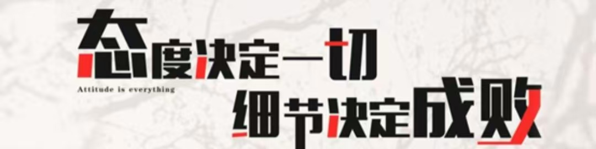

如何培养认真严谨的习惯
时间:2022年02月21日17时26分 来源:思政教育
- 反复确认，做任何事情都要照顾到每一个细节并反复确认，要有一种能在脑子里“虚拟”整个事件过程的能力，确保所有的节点都正常。
- 想尽办法努力让不可能变为可能，只有用尽全力做了，才算是努力。
- 结果导向—一切以结果为导向，任何事情都是你的名片。还要思考你的结果和过程是否满足所有和你配合的人的需求。
- 学会假设—了解周围比你强的人，观察他们的做事方法。遇到让自己束手无策的时候，把自己虚拟成他的样子，想想他会怎么做